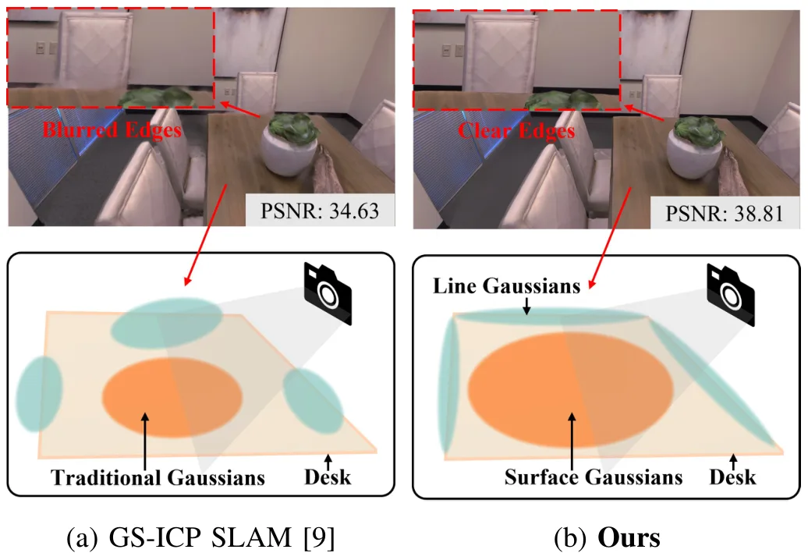
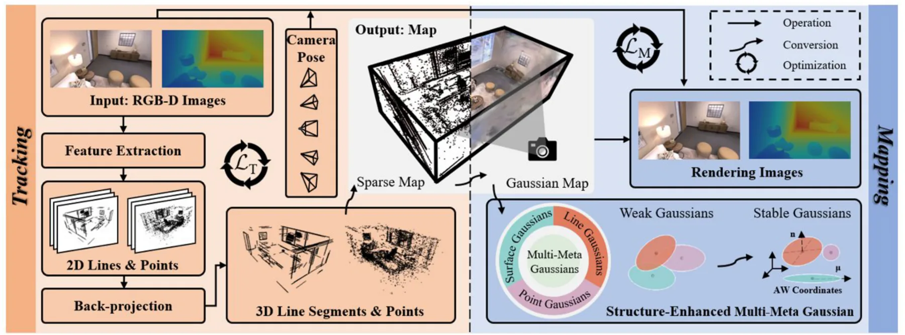
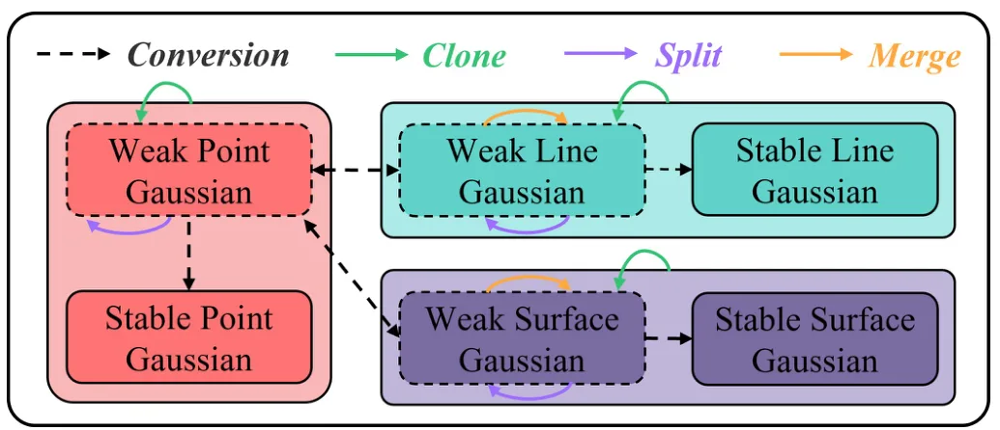
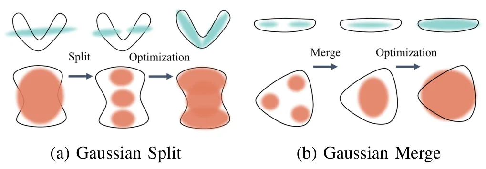
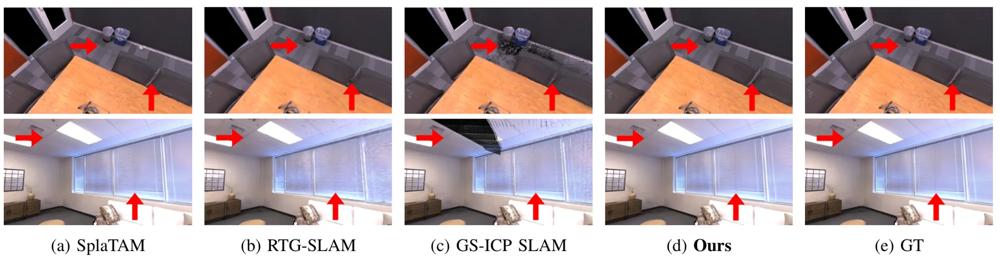
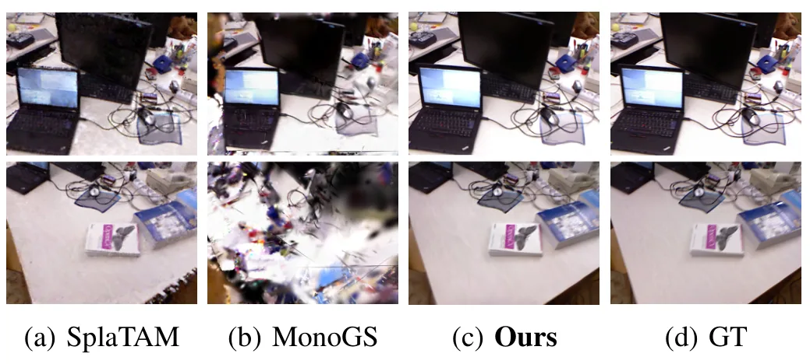
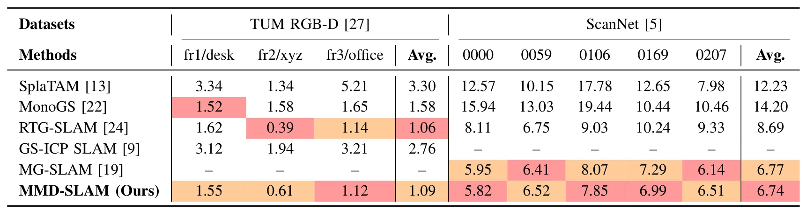
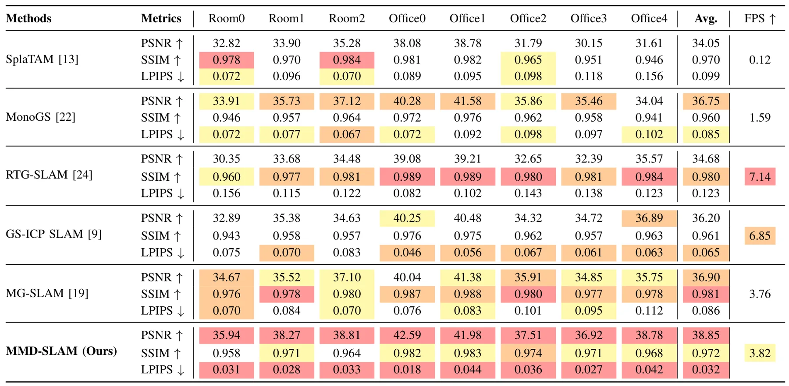
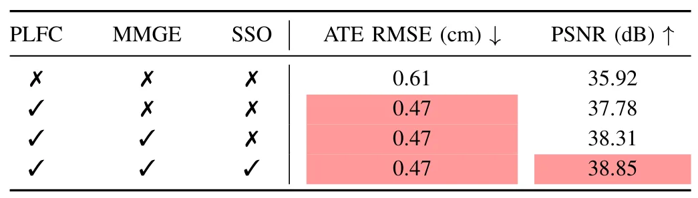

MMD-SLAM：结构增强的多元 Gaussian 分布引导视觉 SLAMMMD-SLAM: Structure-Enhanced Multi-Meta Gaussian Distribution-Guided Visual SLAM
直接属于 3DGS-based Visual SLAM；结构先验、线特征和 Gaussian evolution 对地图一致性有明确价值，但需关注 Atlanta World 对一般场景的限制。
一句话工作总结
MMD-SLAM 将点线融合、Atlanta World 结构先验和 Multi-Meta Gaussian 表示结合，用结构化 3DGS 地图同时提升跟踪和渲染。
摘要
3D Gaussian Splatting 推动了新视角合成和高保真场景重建，也扩展了 3DGS-based Visual SLAM 的潜力。但多数现有系统未充分利用底层结构信息，限制了渲染质量并导致地图不一致。本文提出 MMD-SLAM，一个结构增强的 Visual SLAM 框架，利用 Atlanta World 假设引导 Multi-Meta Gaussian 表示进行逼真建图。首先，作者引入点-线融合 pose optimization，把 3D line segments 纳入跟踪约束；其次，设计带 dominant directions 的 Multi-Meta Gaussian 表示，显式编码 Atlanta World 结构先验；最后，提出 Gaussian evolution strategy，使 Gaussian 随场景几何自适应演化，并在全局优化中融合结构线索。实验显示该方法在跟踪精度和建图质量上达到 SOTA，例如相对 MonoGS 在 ScanNet 上 ATE RMSE 降低 48.56%，在 Replica 上 PSNR 提升 5.71%。
3D Gaussian Splatting (3DGS) has significantly boosted novel view synthesis and high-fidelity scene reconstruction, expanding the potential of 3DGS-based Visual Simultaneous Localization and Mapping (SLAM) methods. However, most existing systems fail to fully exploit the underlying structural information, which limits rendering quality and often leads to inconsistent maps. To address these limitations, we propose MMD-SLAM, a structure-enhanced Visual SLAM framework that leverages the Atlanta World (AW) assumption to guide a Multi-Meta Gaussian representation for photorealistic mapping. First, we introduce a point-line fusion strategy for pose optimization, where 3D line segments are incorporated to improve tracking robustness and provide additional constraints for mapping. Second, we design a Multi-Meta Gaussian representation with dominant directions, explicitly encoding structural priors from the AW hypothesis. Finally, we propose a Gaussian evolution strategy that adapts to scene geometry and incorporates structural cues into global optimization. Extensive experiments demonstrate that these innovations enable MMD-SLAM to achieve state-of-the-art performance in both tracking accuracy and mapping quality. e.g., our method achieves a 48.56% reduction in ATE RMSE on ScanNet and a 5.71% improvement in PSNR on Replica, compared with MonoGS.
中文解读摘录
- 链接：abs / PDF；作者：Fan Zhu, Ziyu Chen, Peichen Liu, Yifan Zhao, Zhisong Xu, Hui Zhu, Hongxing Zhou, Sixun Liu；类别：cs.RO, cs.CV；备注：ICRA 2026；采集 score=17。
- 核心思路：面向 3DGS-based Visual SLAM 中结构信息利用不足的问题，用 Atlanta World 假设引导 Multi-Meta Gaussian 表示，并把结构先验显式注入 photorealistic mapping。
- 方法要点：点-线融合用于 pose optimization；Multi-Meta Gaussian 携带 dominant directions；Gaussian evolution strategy 根据场景几何自适应更新，并在全局优化中融合结构线索。摘要报告相对 MonoGS 在 ScanNet 上 ATE RMSE 降低 48.56%，在 Replica 上 PSNR 提升 5.71%。
- 关注点：需要核验 Atlanta World 假设对非曼哈顿/室外场景的适用性，以及 point-line fusion 与 Gaussian evolution 是否能稳定提升跟踪而不只提升渲染。
图表/页面预览
{kind=link}

{kind=link}

{kind=link}

{kind=link}

{kind=link}

{kind=link}

{kind=link}

{kind=link}

{kind=link}
